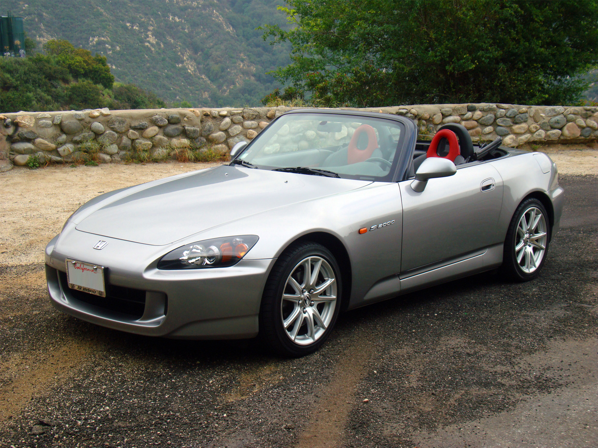
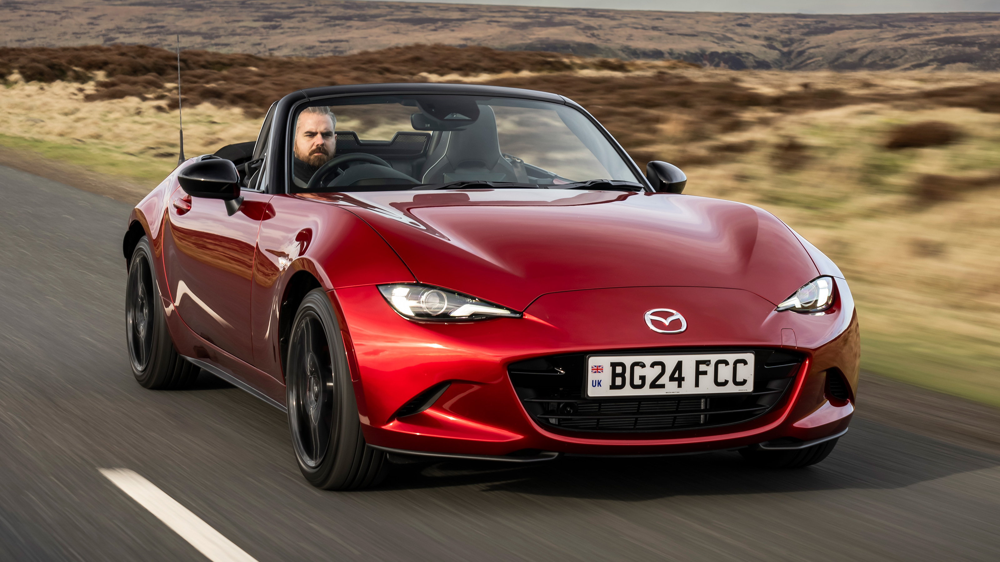
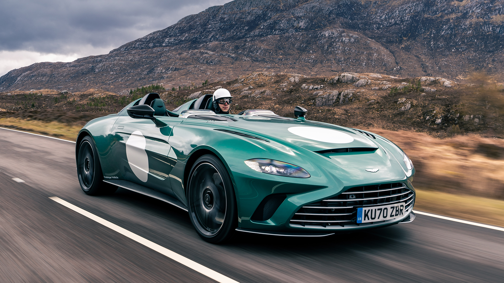

Кузов РОДСТЕР

Родстер (Roadster, Spyder, Barchetta) – это двухместный кабриолет, созданный для максимального удовольствия от вождения. В отличие от обычных кабриолетов, родстеры ориентированы на малый вес, управляемость и спортивный характер.
Основные характеристики:
- Только два места – никаких задних сидений, всё ради водителя и пассажира.
- Открытый кузов – обычно с мягким верхом (Soft Top) или без крыши вовсе.
- Лёгкий вес – часто родстеры весят меньше, чем аналогичные купе.
- Задний привод (чаще всего) – для лучшей управляемости.
- Спортивная подвеска – жёсткие настройки для динамичного вождения.
Классификация:

Mazda MX-5
- Классические родстеры – лёгкие и манёвренные спорткары (Mazda MX-5 Miata, BMW Z4, Honda S2000, Porsche 718 Boxster).
- Суперкар-родстеры (Spyder, Speedster) – мощные открытые версии суперкаров (Ferrari 296 GTS, Lamborghini Huracán Evo Spyder, McLaren 720S Spider).
- Баркетты (Barchetta) – экстремальные родстеры без лобового стекла или с его минимальным размером (Ferrari Monza SP1/SP2, Aston Martin V12 Speedster, McLaren Elva).

McLaren 720S Spider

Aston Martin V12 Speedster
Преимущества:
- Максимальные эмоции от вождения – открытый воздух, мощный звук мотора.
- Спортивная управляемость – малый вес и задний привод дают отличную динамику.
- Хорошая устойчивость на трассе – длинная база делает седаны удобными для дальних поездок.
- Красивый и эффектный дизайн – родстеры всегда выглядят стильно.
Недостатки:
- Меньше практичности – только два места и маленький багажник.
- Жёсткий кузов, но хуже, чем у купе – из-за отсутствия крыши приходится усиливать конструкцию.
- Плохая шумоизоляция – особенно у версий с мягким верхом.
- Не для зимы – в холодном климате родстер не лучший выбор.
Родстер – это идеальный автомобиль для удовольствия от вождения, но не для повседневной практичности. Если важны эмоции, лёгкость и драйв, родстер – лучший вариант. Если нужна универсальность, лучше смотреть в сторону спорткупе или мощных кабриолетов.